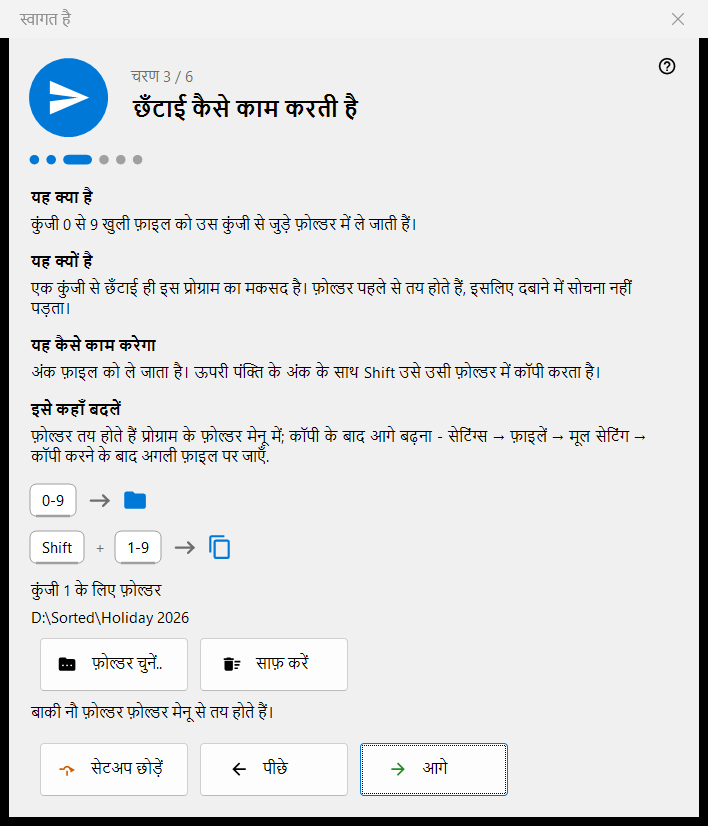
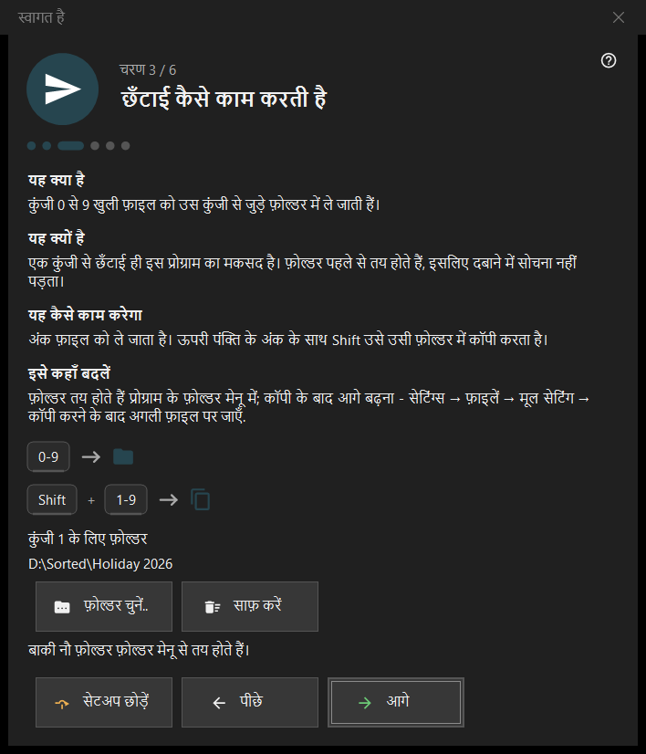

स्वागत है
स्वागत है
यह किस लिए है
स्वागत के चरण कुछ ही मिनटों में बुनियादी चीज़ें सेट करते हैं: भाषा, रूप-रंग, कुंजी 1 का फ़ोल्डर, हटाना और फ़ाइल संबंध। ये पहली बार चलाने पर, खाली व्यूअर स्क्रीन के प्रारंभिक सेटअप बटन से, और सेटिंग्स के सामान्य पृष्ठ के स्वागत के चरण फिर से दिखाएँ विकल्प से खुलते हैं। ये केवल 64-बिट संस्करण में हैं।


इस क्रम में
- भाषा चुनें।
- पृष्ठभूमि योजना और व्हील की कार्रवाई चुनें।
- कुंजी 1 का फ़ोल्डर चुनें।
- पढ़ें कि हटाना कैसे काम करता है।
- फ़ाइल संबंध सेट करें।
- सार देखें और समाप्त दबाएँ। आगे बटन आगे बढ़ाता है, पीछे बटन वापस लाता है, सेटअप छोड़ें बटन अंतिम चरण पर पहुँचा देता है।
तत्व
इंटरफ़ेस की भाषा
विंडो की भाषा तुरंत पूर्वावलोकन के रूप में बदल जाती है; प्रोग्राम उसे केवल आगे दबाने पर अपनाता है। आगे दबाए बिना विंडो बंद करने पर प्रोग्राम की भाषा पहले जैसी ही रहती है।
रूप-रंग
तस्वीर वाले क्षेत्र की पृष्ठभूमि योजना चुनें (कोने से, काला, सफ़ेद, किनारे से, ऊपर से, नीचे से) और व्हील की कार्रवाई: या तो वह कर्सर पर ज़ूम करता है और तीर कुंजियाँ फ़ाइलें बदलती हैं, या वह फ़ाइलें बदलता है और Ctrl के साथ व्हील ज़ूम करता है। दोनों को बाद में सेटिंग्स के छवियाँ पृष्ठ पर बदला जा सकता है।
छँटाई कैसे काम करती है
अंक 0-9 मौजूदा फ़ाइल को एक फ़ोल्डर में ले जाते हैं; ऊपरी पंक्ति के अंक के साथ Shift उसे कॉपी करता है। कुंजी 1 का फ़ोल्डर फ़ोल्डर चुनें.. बटन से चुनें; बाक़ी नौ बाद में सेटिंग्स के गंतव्य पृष्ठ पर तय होते हैं। गायब हो गए फ़ोल्डर के बारे में यह संदेश आता है: यह फ़ोल्डर अब उपलब्ध नहीं है। कोई और चुनें।
सुरक्षित हटाना
दिखाता है कि Del (रीसायकल बिन में) और Shift+Del (हमेशा के लिए) कैसे काम करते हैं। हटाने के विकल्प सेटिंग्स के फ़ाइलें पृष्ठ पर हैं।
यहाँ तस्वीरें खोलें
इस प्रोग्राम को फ़ाइल एक्सप्लोरर से तस्वीरें और वीडियो खोलने देता है। यह चरण तभी दिखता है जब प्रोग्राम Microsoft Store पैकेज के रूप में इंस्टॉल न हो; यह आपके उपयोगकर्ता खाते पर लागू होता है और इसके लिए व्यवस्थापक अधिकार नहीं चाहिए।
सब तैयार है
सार में हर सेटिंग, उसका मान और उसे बदलने की जगह दी जाती है। अगर इस पीसी पर सर्वर घटक इंस्टॉल हैं, तो इस पीसी पर सर्वर ब्लॉक हर एक को उसकी स्थिति और प्रबंधक खोलें बटन के साथ दिखाता है; कुछ भी इंस्टॉल न हो तो ब्लॉक छिपा रहता है।
चरण के हिस्से
हर चरण के चार हिस्से होते हैं: यह क्या है, यह क्यों है, यह कैसे काम करेगा और इसे कहाँ बदलें।